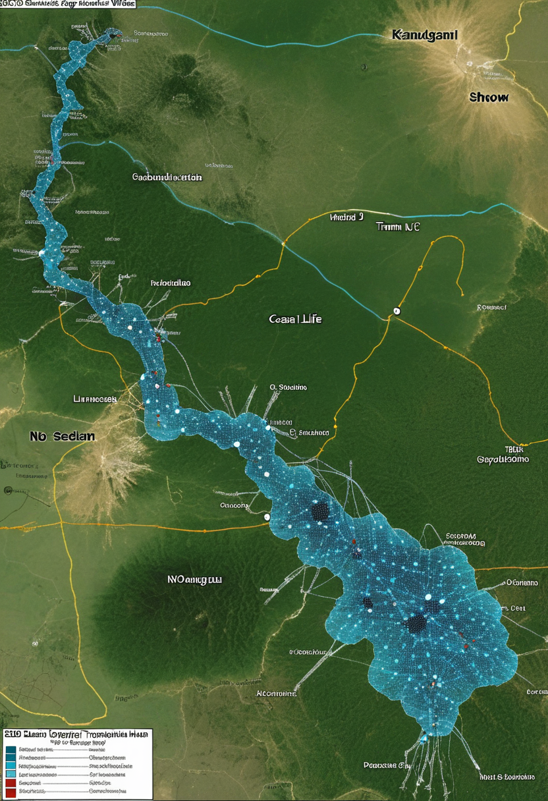
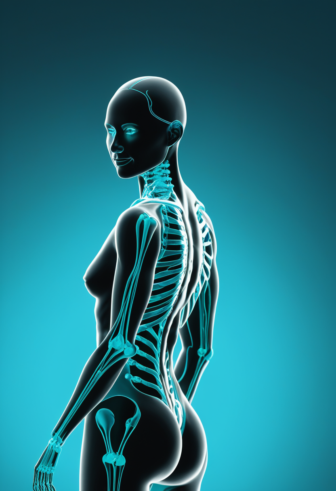
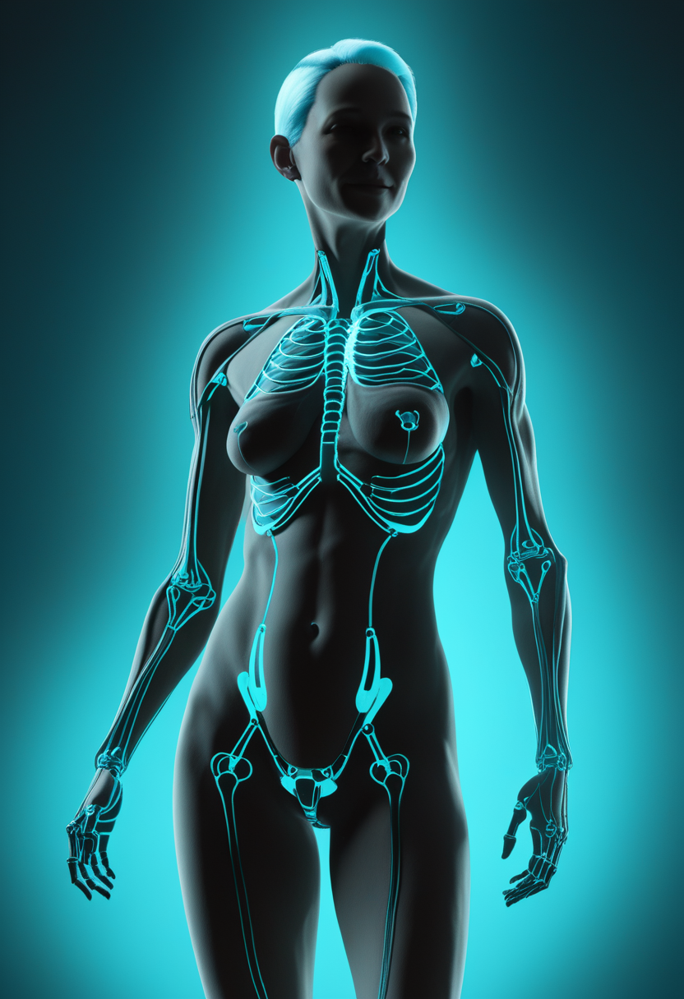
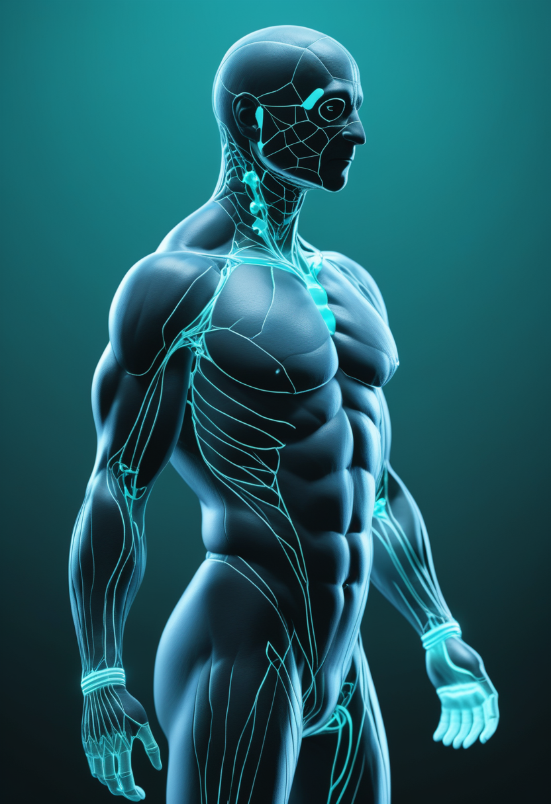
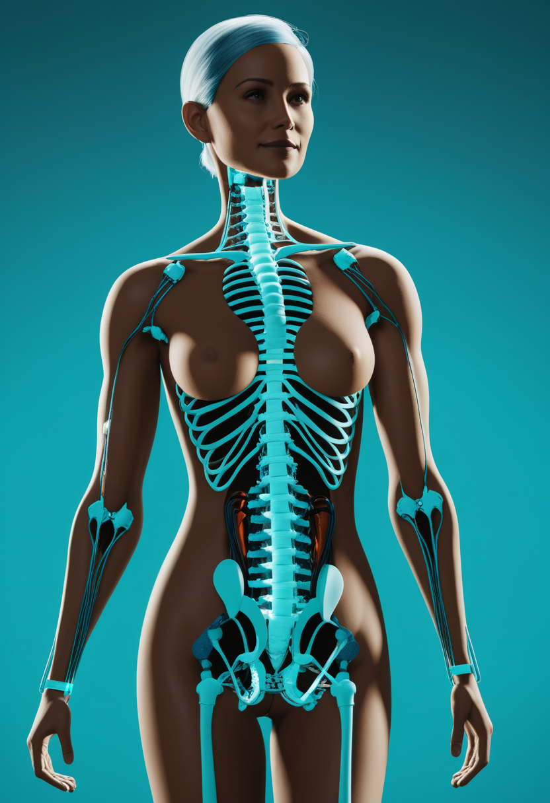
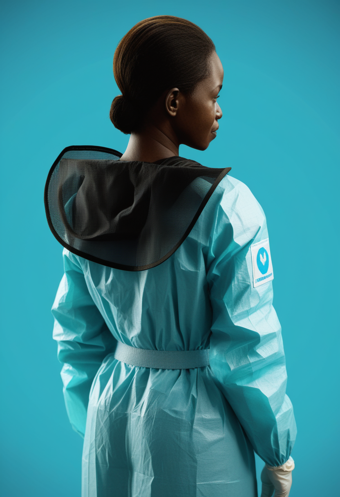
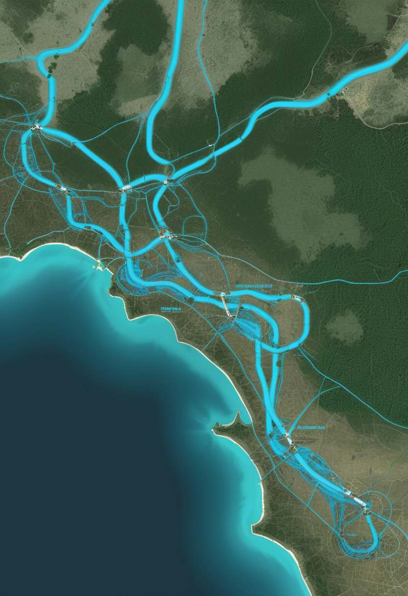
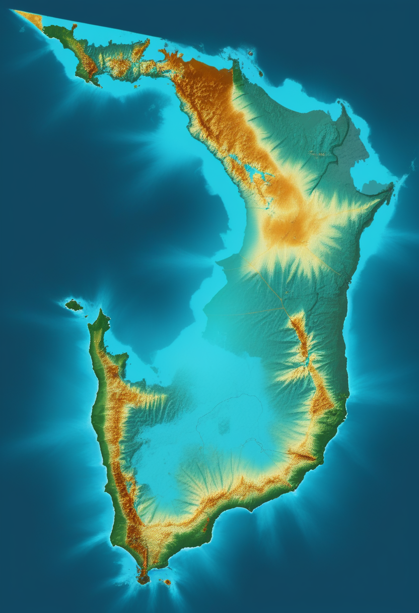
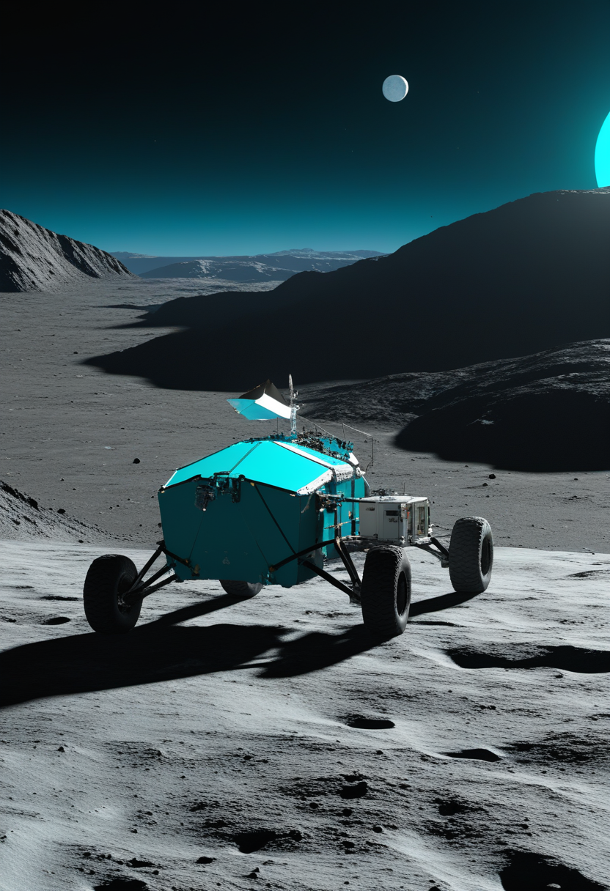
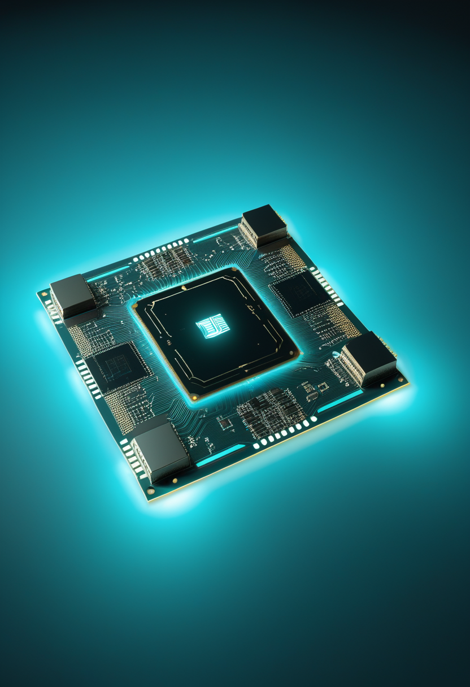

金曜日の便り。コンゴ民主共和国(DRC)のブンディブギョ型エボラは確定1,759例・死者600人に達し、既報(7/8号)の1,561例・死者506人から3日で症例198・死者94という拡大が続いている。加えて交通の要衝キサンガニで疑い例が浮上し、4州目への飛び火が懸念される正念場を迎えた。マダガスカルのmpoxも確定約2,600例・死者15人へと静かに拡大している。SMAの世界では、アピテグロマブが米国の製造問題を解消しFDA優先審査を継続する一方、ロシュは新薬候補emugrobartの開発中止を発表するなど明暗が分かれた。BCIでは思考で脊髄を刺激するONWARD Medicalの臨床展開が広がる一方、業界全体の「2026年量産」報道にはMIT Technology Reviewから現実的な商用化は2028〜2030年との冷静な見立てが入った。宇宙では天問2号がカモオアレワへの段階降下計画を明らかにし、重力波観測網は総数390件という大型カタログを更新。人類史の分野では、自閉症児向けの脳デジタルツインがイタリアで開発される一方、AI意識論争は具体的な数字を伴う理論対立へと深まっている。
コンゴ民主共和国(DRC)保健当局は7月8日、ブンディブギョ型エボラの確定症例が1,759例、死者600人に達したと発表した(7月7日時点確定分)。既報(7/8号)の1,561例・死者506人(7月4日時点)から3日で症例+198・死者+94という拡大ペースは鈍化の兆しを見せていない。加えて、道路・河川・空路が交わる中部の要衝都市キサンガニ(ツショパ州都)で疑い例2件が浮上し、既存の被災3州(イトゥリ・北キブ・南キブ)に続く4州目への飛び火と、未検知の市中感染チェーンの存在が懸念されている。ワクチンも承認された治療薬も存在しないこの株にとって、都市部拡散のリスクが強まる正念場を迎えている。

Scholar Rock社は製造委託先に関するFDAの指摘を受け、米国内に第2の製造拠点を追加したうえで生物製剤承認申請(BLA)を再提出した。FDAはこれを受理し優先審査を継続しており、審査完了目標日(PDUFA)は9月30日のまま変更はない。承認されれば、神経保護ではなく筋量そのものを回復させる初のSMA治療薬となる。欧州(EMA)側の承認判断は6月時点でなお継続審議中。

バイオジェンの次世代SMA治療薬候補サラネルセン(BIIB115)の登録第3相「STELLARプログラム」で、無症候(発症前)新生児を対象とするSTELLAR-1が患者スクリーニングを開始した。今後SOLAR試験(2026年第2四半期開始予定)、STELLAR-2試験(同第3四半期開始予定)を通じ、サラネルセン単独・遺伝子治療単独・両者併用という早期治療戦略を比較する計画。6月にFDA画期的治療法指定を取得した効能データを土台に、最も早い介入タイミングでの最適化を目指す段階に入った。

ロシュ(ジェネンテック)は、抗ミオスタチン抗体emugrobart(GYM329)とrisdiplam(エブリスディ)併用を検証した第2/3相MANATEE試験の結果を受け、第3相開発への移行を断念すると発表した(3月20日)。risdiplam単独と比較して運動機能・筋量の一貫した改善は認められなかったものの、安全性プロファイルは良好で治療中止に至る重篤な有害事象はなかったという。試験参加者への追跡評価は継続し、データは今後の医学会議で発表予定。
アピテグロマブとサラネルセンはそれぞれ規制・臨床の次段階へ着実に前進する一方、emugrobartの開発中止は、SMA治療の前進が一様な成功続きではないことを静かに物語る。

脊髄損傷後のリハビリ技術を手掛けるONWARD Medicalは、脳信号と脊髄刺激を組み合わせ思考による動作再建を目指す「ARC-BCI」システムの追加埋め込みを完了し、参加者数を積み増した。同社は並行して、脊髄損傷後の血圧不安定を対象とする「ARC-IM」システムの国際ピボタル試験「Empower BP」も欧米6カ国・約20施設で患者登録を進めており、2026年第1四半期には外部刺激装置「ARC-EX」も70台超を新規供給するなど、複数の適応で商業化と臨床試験が同時並行する段階に入った。
イーロン・マスク氏は2026年中のBCIデバイス量産体制移行とほぼ全自動の手術プロセスへの移行を改めて表明しているが、MIT Technology Reviewの分析(6月19日)は「2026年時点で市販承認されたBCIは一つも存在しない」と指摘する。Neuralink・Synchronともに米FDA承認ルートを追求しているが、現実的な商用承認・限定的な市販開始の時期は2028〜2030年になるとの見立てだ。本紙がこれまで伝えてきた各社の量産・提携表明は前進の実態を伴う一方、「臨床試験の域を出ていない」という一線は依然として越えていない。
ONWARDが脊髄損傷という異なる切り口で臨床・商業を同時に前進させる一方、業界全体の「量産」報道には冷静な現実チェックが入った一週間。BCIは依然として臨床試験の域を出ていない。

コンゴ民主共和国(DRC)保健当局は7月8日、ブンディブギョ型エボラの確定症例が1,759例、死者600人に達したと発表した(7月7日時点の確定分)。前回既報(7/8号、7月4日時点で1,561例・死者506人)から3日で症例+198・死者+94という拡大ペースであり、鈍化の兆しは見られない。ワクチンも承認された治療薬も存在しないこの株にとって、死者数600人という節目は流行の重さを改めて示す数字となった。

既存の被災3州(イトゥリ・北キブ・南キブ)に加え、道路・河川・空路が交わる中部の要衝都市キサンガニ(ツショパ州都)で7月8日、疑い例2件が報告された。1例はイトゥリ州ニアニア保健区との疫学的関連が確認されているが、もう1例には既知の関連がなく、未検知の市中感染チェーンの存在が懸念されている。確認検査の結果待ちで、確定すればツショパは4州目の被災地となる。

マダガスカル保健省は7月6日、2025年12月の初検出以来の累計確定例が約2,600例(2,652例)、死者15人に達したと発表した。東部地域が最も深刻で首都アンタナナリボが続く。7月3日時点の別集計(通知4,049例中確定2,581例)ともおおむね整合しており、直近数日で確定作業が進んだとみられる。
DRC全体の死亡率上昇に加え、交通拠点キサンガニへの飛び火疑いは封じ込め戦略の正念場を意味する。マダガスカルのmpoxも静かに拡大を続けており、アフリカの複合感染症危機は複数の戦線で同時進行している。

中国国家航天局(CNSA)の天問2号は7月2〜4日にかけて準衛星小惑星カモオアレワへ約20kmまで接近・到達した。今後は3km、600m、300mと段階的に高度を下げながらサンプリング地点を探査する計画で、この小天体が月起源である可能性の検証にも注目が集まっている。

中国科学技術大学(潘建偉・徐飛虎ら)は中山大学・上海交通大学と共同で、窒化シリコンと薄膜ニオブ酸リチウムを組み合わせたハイブリッド集積光子チップを開発した。ツインフィールド量子鍵配送(TF-QKD)方式により、540kmの光ファイバー越しに中継なしでの理論限界を上回る安全鍵生成率を達成したと6月19日発表した(6月中旬の成果)。量子通信の実用距離延伸に向け、チップ化による小型・低コスト化が一歩前進した形だ。
LIGO・Virgo・KAGRA国際共同観測網(LVK)は5月26日、重力波観測史上最大となる更新版カタログ「GWTC-5.0」を公開した。2024年4月〜2025年1月の観測データから新たに161件の重力波検出を追加し、これまでの検出総数は390件に達した。史上最高の信号対雑音比76.9を記録した信号も含まれ、単独の恒星崩壊ではなく過去の合体で生まれたブラックホール同士が再び合体する「第二世代ブラックホール」の証拠も複数確認された。重力波天文学が「成熟した科学」へ入ったことを示す節目とされる。
天問2号は具体的な降下計画という次の一歩を踏み出し、中国発の量子通信チップは実用距離での限界突破を果たした。重力波カタログの大型更新は、目に見えない衝突の記録が着実に積み上がっていることを静かに示している。
イタリアの研究チームは7月7日、自閉症スペクトラム障害の子ども向けに個別化した脳のデジタルツインモデルを開発したと発表した。誤作動している神経回路の位置を特定し、経頭蓋磁気刺激(TMS)による狙い撃ち治療への応用を目指す。脳のデジタルツインという概念自体はてんかん手術支援等ですでに臨床応用が進みつつあるが、自閉症という発達領域への適用はまだ緒に就いたばかりで、AIの「善用」事例として位置づけられている。
7月1〜2日にサセックス大学で開催されたAISB2026会議のシンポジウム「AI意識と倫理」で、新たな調査結果が示された。哲学者調査では現行AIが意識を持つと考える割合はわずか3.4%だが、将来的なAI意識の可能性を認める割合は39%、意識研究者に限れば3分の2が「機械もいずれ意識を持ちうる」と回答した。統合情報理論(IIT)は現行アーキテクチャでの意識を否定する一方、注意スキーマ理論は理論上の道を残すなど、理論間の対立は未解決のまま残った。
国連人権理事会がニューロテクノロジーと人権に関する調査を要請し、UNESCOも国際的な倫理検討を主導する中、ブラジルでは複数の法案が審議中、メキシコは憲法改正を推進、ウルグアイもニューロライツ法案を提出済みとなっている。精神のプライバシー・認知の自由・精神的完全性を保護する国際的な法整備が、BCIや脳デジタルツインの実用化に一歩遅れる形で進みつつある。
脳のデジタルツインは自閉症という新たな対象へ、AI意識論争は具体的な数字を伴う理論対立へと、それぞれ一歩踏み込んだ。一方、ニューロライツ立法はようやく南米で緒に就いたばかりで、技術と法制度のギャップは埋まっていない。
2026年7月10日、コンゴ民主共和国のブンディブギョ型エボラは死者600人という重い節目を刻んだ。交通の要衝キサンガニへの飛び火疑いは、この流行が新たな局面に入りつつあることを示している。だが同じ週、SMAの世界ではアピテグロマブが規制の階段を一段上がり、BCIの世界ではONWARDが脊髄損傷という異なる戦線で前進を続けた。宇宙では天問2号が次の降下計画を明らかにし、重力波カタログは目に見えない衝突の記録を静かに積み上げた。危機の重みと前進の手応えが、今週もまた同じ朝に並んでいる。
では、また明日の朝に。 — JaH